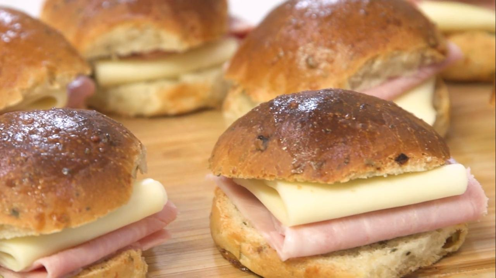

Panes Saborizados

Ingredientes
- 500 g de harina 000.
- 10 g de sal.
- 25 cc de aceite.
- 25 g de manteca.
- 250 cc de agua.
- 20 g de levadura fresca.
- 50 g de queso seco.
- 2 cdas de orégano seco.
- 2 cdas de cebolla picada.
Para el relleno
- Jamón cocido, c/n.
- Queso, c/n.
Procedimiento
- Colocar en el centro el resto de los ingredientes menos los sabores.
- Mezclar y amasar.
- Descansar el bollo durante 20 minutos.
- Desgasificar y agregar el relleno. Amasar.
- Cortar la masa en piezas de 50 gramos, bollar y estirar en una placa enmantecada.
- Reposar el bollo media hora, tapado.
- Fermentar.
- Pintar con doradura.
- Hornear durante 15/20 minutos a 200°.
- Una vez horneados, pintar con manteca derretida.
- Cortar y rellenar.